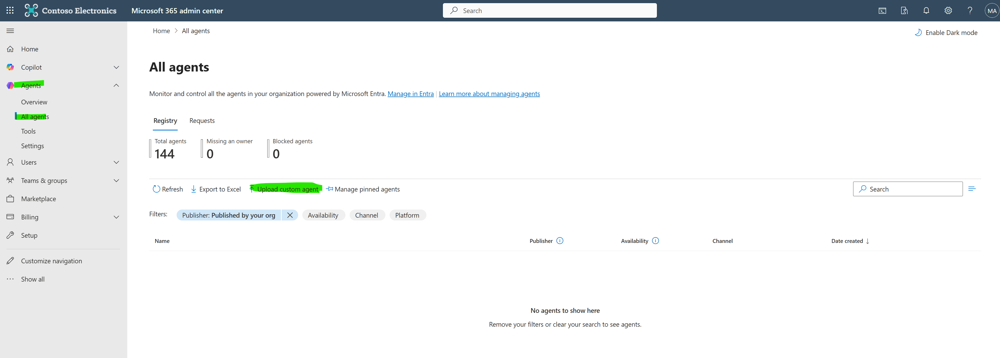
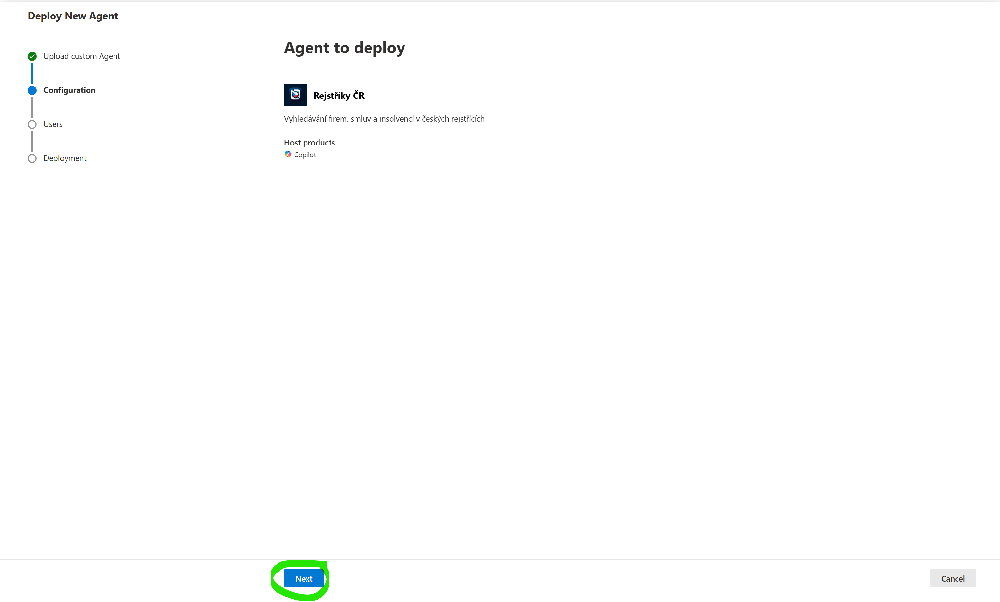
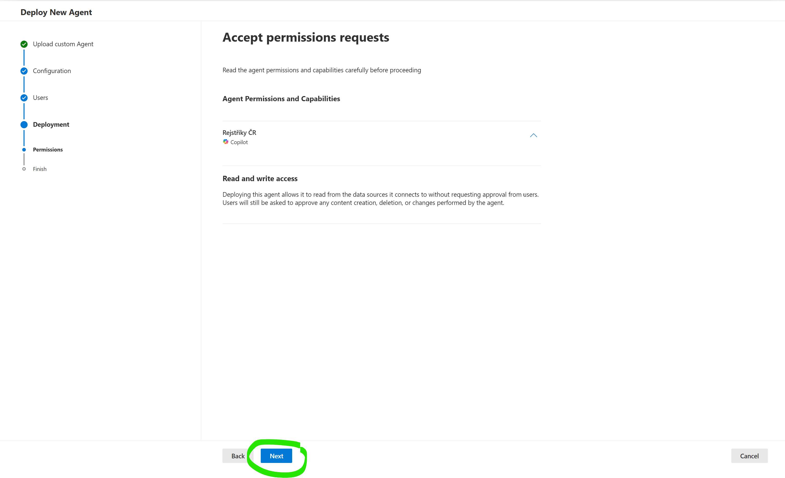
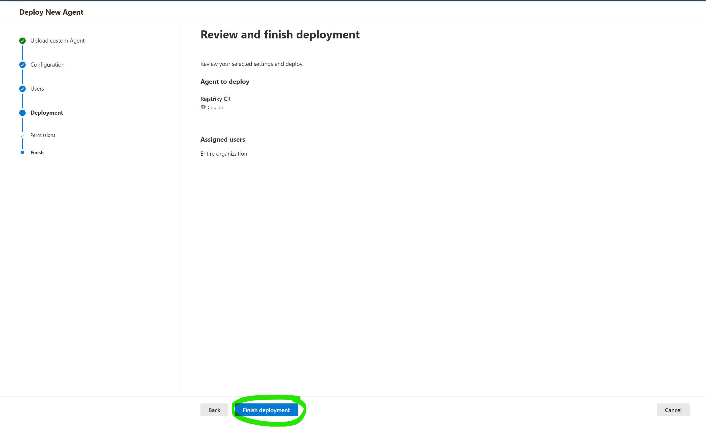
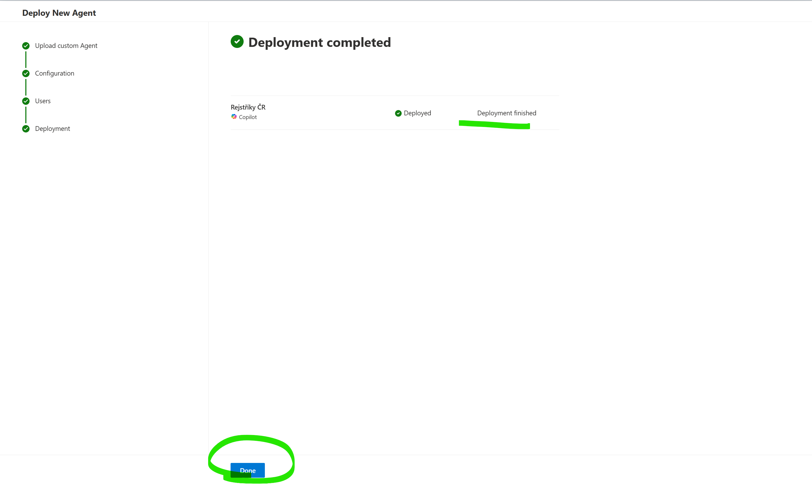

Než začnete
Pro nasazení agenta potřebujete:
- Roli Global Administrator, Teams Administrator nebo AI Administrator v Microsoft 365 tenantovi
- ZIP balíček agenta — stáhněte níže
Postup nasazení — krok za krokem
1
Otevřete M365 Admin Center a přejděte do sekce Agents
Přejděte na admin.microsoft.com → Settings → Agents → klikněte Upload custom agent.
Nebo přejděte přímo na Settings → Agents.
2
Vyberte ZIP soubor
V dialogu nahrajte stažený soubor RejstrikyCR.zip.
3
Potvrďte a pokračujte
Systém validuje balíček. Pokud je vše v pořádku, klikněte Next.
4
Přiřaďte uživatele
Vyberte, kdo bude mít k agentovi přístup:
- Entire organization — všichni uživatelé v tenantovi
- Specific users/groups — konkrétní uživatelé nebo skupiny
5
Odsouhlaste oprávnění
Zkontrolujte požadovaná oprávnění agenta a klikněte Next.
Agent nepotřebuje žádná zvláštní oprávnění. Komunikuje pouze s externími API (ARES, Hlídač státu) — nepřistupuje k žádným interním firemním datům ani souborům.

6
Dokončete nasazení
Zkontrolujte souhrn a klikněte Finish deployment.
7
Hotovo!
Agent je nasazen. Propagace do M365 Copilot může trvat několik minut až hodin.
Uživatelé najdou agenta v levém panelu M365 Copilot nebo ho mohou zavolat přes @Rejstříky ČR v chatu.
Aktualizace agenta
Při budoucích aktualizacích (nové funkce, opravy, změna instrukcí):
- Stáhněte nový ZIP balíček
- V M365 Admin Center přejděte na Settings → Agents
- Najděte Rejstříky ČR v seznamu
- Klikněte na aplikaci → Update → nahrajte nový ZIP
Poznámka: Aktualizace ZIP balíčku je potřeba pouze při změnách na straně agenta (instrukce, pluginy, ikony). Pokud se mění pouze backend server (nové datové zdroje, opravy chyb), žádná akce ze strany administrátora není nutná.
Odebrání agenta
Pokud potřebujete agenta odebrat:
- V M365 Admin Center přejděte na Settings → Agents
- Najděte Rejstříky ČR
- Klikněte Remove
Řešení problémů
| Problém | Řešení |
|---|---|
| Validace ZIPu selhala | Zkontrolujte, že používáte správný soubor RejstrikyCR.zip. Nerozbalujte ani neupravujte obsah. |
| Uživatel nevidí agenta | Propagace může trvat až několik hodin. Ověřte, že uživatel byl přiřazen v kroku 4. |
| Agent neodpovídá | Backend server na Azure může být dočasně nedostupný. Zkuste to za chvíli znovu. Viz uživatelský návod pro další tipy. |
Důležité: Agent komunikuje s externími API (ARES — ares.gov.cz, Hlídač státu — hlidacstatu.cz). Tato API jsou veřejně dostupná a agent k nim přistupuje bez autentizace. Žádná firemní data neopouštějí organizaci.